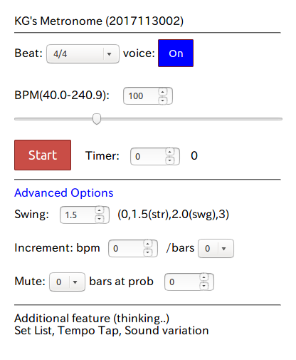

|

|
Basic Operation -- Select Beat, Adjust BPM, then press Start
- Select Beat: 4/4, 6/8, 8/8 swing etc.
- Sound selection: Cowbell/Voice/Both(Cowbell+Voice)
- Start/Stop
- Adjust bpm(0.1 step) with the range slider (play continues),
enter/modify number (play stops),
or set bpm with TAP(timeout 3 sec).
- Timer(sec or bars): Similar to kitchen timer.
Set positive number for expiration time in second and/or in bars.
The timer pauses when the metronome is stopped.
Set 0 to disable the timer.
Advanced Options
- Swing adjust(0.0 to 3.0): 1.5(straight), 2.0(swing)
Only affects swing presets (8/8swing etc.)
0-------------1--------------2 (1.5: straight)
0----------------1-----------2 (1.8: less swing)
0------------------1---------2 (2.0: swing)
0--------------------1-------2 (2.2: more swing)
0-----------------------1----2 (2.5: extreme swing)
0----1-----------------------2 (0.5)
- Increment: automatic bpm step up(down with minus values).
Set bpm and bars (set 0 to disable)
- Mute: Set duration in bar(s) and the probability
(Set 0 for bar(s) to disable).
Note: Always sound is turned on after the mute bar length.
For example, 1 bar(s) at prob. 1.0 gives alternate on/off.
- Even notes volume.
O: full volume
x: muted(0.0) or quiet(0.1))
----------------------
4/4 : x O x O
6/8 : x O x O x O (Wartz style)
8/8 : x O x O x O x O
12/8: x x O x x O x x O x x O
----------------------
Note: In this metronome 12/8 = (group of 3 1/8 notes) x 4 times in a bar
|